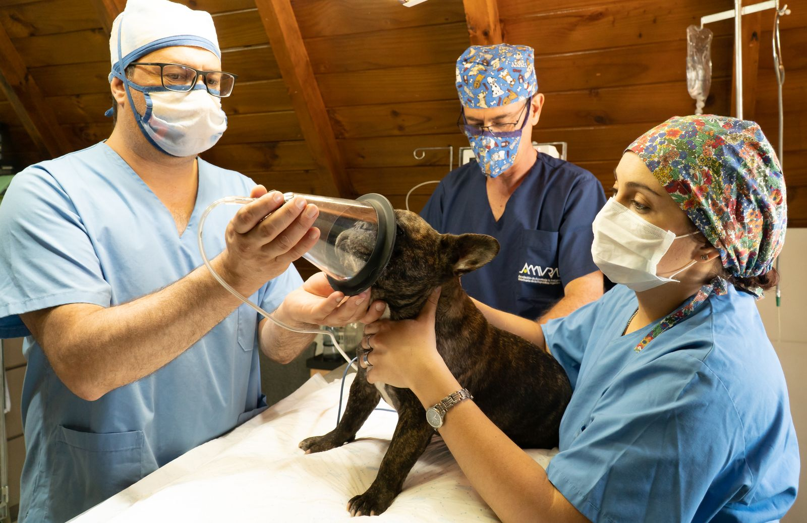

EXPERTISE CHIRURGICALE
Chirurgie spécialisée
Orthopédie, traumatologie et chirurgie des tissus mous chez le chien et le chat. La consultation spécialisée permet d’évaluer la situation, de discuter les options et de proposer une intervention adaptée, en lien avec le vétérinaire référent.
Explorer